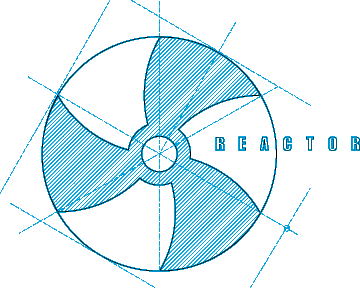
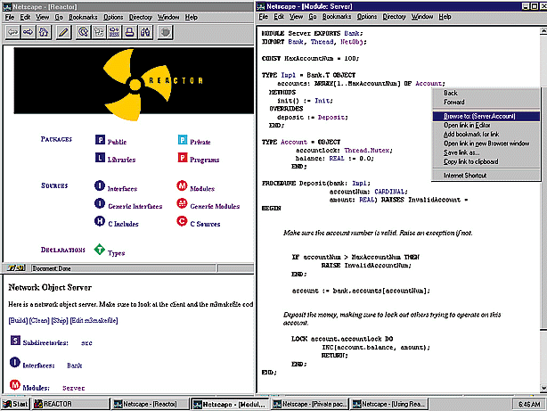

Impl. and Interface

Unsafe Code
|
R E A C T O R
A DISTRIBUTED APPLICATION DEVELOPMENT SYSTEM |  |
README file so that a coworker can easily find the
external documentation for programs.

The Reactor Development Environment: Integrating into an off-the-shelf web browser, the Reactor development environment gives you the same look and feel whether you are programming on Unix or Windows. You can build and browse your programs, or even link in your own html pages into your program sources. Full size image, 98K.
Each file in your project and every command in Reactor maps to a URL
in the virtual web space of the Reactor server. Hence, as web browsing technology
becomes embedded further into the desktop metaphor, the Reactor user interface
will become a natural part of the development desktop rather than a stand-alone
entity running on the side. Essentially, a Reactor-based project will be
just another explorable space residing on the desktop reached through standard
desktop interaction mechanisms. Moreover, to aid programming efforts that
require multiple developers, Reactor provides public and private repositories,
and allows team members to browse each other's projects. You can embed a
reference to a Reactor project in an e-mail message to a coworker. With
Reactor, team communication is just a click away.
| Smalltalk | Ada83 | Ada95 | Java | C++ | C | Modula-3 | |
| Interfaces | |||||||
| Strict Separation of Impl. and Interface | |||||||
| Garbage Collection |
| ||||||
| Mulitple Inheritance | |||||||
| Objects | |||||||
| Concurrency & Threads |
|
| |||||
| Generics | |||||||
| Exceptions | |||||||
| Unsafe Features | |||||||
| Separation of Unsafe Code |
| ||||||
| Dynamic Typing |
|
The Reactor Development Language: Despite its 50-page definition, Modula-3, the heart of the Reactor programming environment, gives you more support than other languages you may have considered for your systems programming tasks.
The language designers sought a combination of features that would support the development of robust, long-lived systems while keeping the language small and comprehensible. The result is a language that is a better suited for building robust distributed applications than other current languages. Modula-3 is more powerful than c++, but its language definition fits comfortably within about fifty pages of text. The next few sections describe some of the major features of the language.
This separation means that you are free to change the way an abstraction is implemented without having to worry about all the clients of that abstraction-no recompiling is necessary. As long as the interface remains unchanged, the clients are unaffected. Clients cannot accidently become dependent on the way something is implemented and later break in mysterious ways when the implementation is changed.
Another benefit of separating interfaces from implementations is that it decouples the activities of the implementor of a programming client from those of the API's provider. For example, client implementors can begin programming as soon as the interface is written. They don't need to wait for full implementations from the API's provider. Also, project managers can easily maintain control of an interface's evolution by restricting write access to it, without crippling the programmer's need to write code.
The true separation of interfaces from implementations is a critical advantage for building large systems.
Historically, programmers have been suspicious of garbage-collected systems, feeling that they introduced too much overhead. Reactor's garbage collector has been tuned through years of intensive use, and performs quite well in client/server applications. Also, Reactor's state-of-the-art, concurrent, incremental collector supports the development of response-critical, multi-threaded applications.
Accompanying Reactor are a number of tools for analyzing and tuning memory usage and an open interface to tune the collector's behavior. In fact, many of the same tools were used in the development of Reactor, which is itself a client/server application.
No matter what garbage collector or memory management scheme you use, there are times when you need complete control of memory management. In Modula-3, you can use untraced references. Then, as the programmer, you are responsible for allocating and freeing the storage. This feature is essential when dealing with data structures allocated by foreign and legacy systems, where you must disallow automatic garbage collections.
Exception handling is an error signalling and handling technique. It ensures that callers can't accidentally forget to check if a routine completed successfully. When a routine encounters an error situation, it raises an exception. This causes the language run-time to see if any of the callers have indicated that they want to handle this exception. If so, then control is transferred back to the point where the program is prepared to handle the exception. If the program is unable to handle the exception, the program is terminated in a controlled fashion. When a routine is declared to raise a set of exceptions, the compiler checks all calls to that routine to see if they are in scopes that handle the raised exceptions. If there are some exceptions that the caller doesn't handle, then the compiler issues a warning. If you get rid of all such warnings in a program, your program will never raise an exception that would not be handled. This is yet another way Reactor helps create robust code.
#include this header file must
be recompiled, even if they are completely unaffected by the change. For
large systems, this strategy results in unnecessary compilation that slows
the development. To avoid such delays, development teams often adopt strict
controls as to when a header file can be modified. This, of course, hinders
the developers. In a typical development group, such a scheme would require
changed header files to be submitted to a master repository late in the
day, and the entire system would be rebuilt overnight. Thus, group development
becomes a batch process. To avoid the delays of the nightly batch process,
most large C/C++ programmer shops spread logically related parts of the
system across seemingly unrelated header files in order to speed recompilation.
The outcome is a system that is harder to understand, change, and maintain.
Reactor's compilation system provides a much more elegant and practical solution. In Reactor, cross-module dependencies are kept on a per-declaration basis. When a declaration (such as a type or a procedure signature) is changed in an interface, only those modules that depend on that particular declaration are recompiled. Typically, only a small number of modules are affected by a changed definition, resulting in much faster rebuild times, even when changing an item in an interface used by many other modules. Programming teams have much greater freedom in submitting, integrating, and testing changes.
Reactor's builder keeps track of dependencies between various modules automatically. Hence, writing makefiles is a breeze: all you have to do is list the modules and interfaces in your program-the builder takes care of the rest.
Reactor's compiler also offers rapid compilation using a fast back-end that
generates native object code directly, instead of generating C code. This,
in conjunction with the minimal recompilation system, means that large systems
can be quickly rebuilt after a change. No more hour-long waits because someone
changed the globals.h file, and no more hassles with maintaining
make dependencies.
The network io framework currently supports the tcp/ip protocol. However, adding support for protocols such as IPX/SPX or NetBEUI is relatively straightforward.
Here is a short example for sending a "Hello World" message to
the process listening on the IP port dest_port:
VAR conn := TCP.Connect(dest_port); msgWr := ConnMsgRW.NewWr(conn); BEGIN Wr.PutText(msgWr, "Hello World\n"); Wr.Flush(msgWr); END
Network Objects allows a Modula-3 object to be handed to another process in such a way that the process receiving the object can operate on it as if it were local. The holder of a remote object can freely invoke operations on that object just as if it had created that object locally. Further, it can pass the object to other processes. Thus, the Network Objects system allows the development of not just simple client-server applications, but more general multi-tiered distributed applications.
In CORBA terms, Network Objects provides the equivalent of ORB functionality; however, Network Objects is much more tightly integrated with the Modula-3 language. Most CORBA implementations are layered on top of C++, a language which was not designed to host distributed programming. In contrast, the Modula-3 language designers made the easy and natural design of distributed applications one of their primary goals. Modula-3 programs are much easier to make distributed than their C++ counterparts.
The current implementation of Network Objects is built on the TCP framework described above. In addition, it is designed to make adoption to specialized network protocols easy. For instance, it is relatively straightforward to add a new transport for Network Objects for CORBA IIOP or DCE RPC.
INTERFACE Bank;
IMPORT NetObj;
TYPE
T = NetObj.T OBJECT METHODS
deposit (acct: AcctNum; amount: REAL) RAISES {BadAmount};
withdraw (acct: AcctNum; amount: REAL) RAISES {BadAmount, InsufficientFunds};
get_balance (acct: AcctNum): REAL;
END;
TYPE
AcctNum = [1..100];
EXCEPTION
BadAmount;
InsufficientFunds;
END Bank.
The Bank interface defines an object type Bank.T which inherits from the
type NetObj.T; inheriting from NetObj.T makes an object eligible for distribution.
The Bank.T type defines three operations: deposit,
withdraw, and get_balance.
The deposit and withdraw operations will raise
BadAmount if the amount is
less than zero. The withdraw operation also raises the InsufficientFunds
exception if there isn't sufficient funds in the account to meet the requested
withdrawal amount.
Continuing our example, we show how the bank server can be implemented.
To save space, we show only the implementation of the deposit operation;
the other operations can be implemented in a similar fashion.
MODULE Server; IMPORT Bank, NetObj;
TYPE BankImpl = Bank.T OBJECT accounts : ARRAY Bank.AcctNum OF Account; lock : MUTEX; OVERRIDES deposit := Deposit; withdraw := Withdraw; (* not included *) get_balance := Balance; (* not included *) END;
Account = RECORD balance : REAL := 0.0; END;
PROCEDURE Deposit (self: BankImpl; acct: Bank.AcctNum; amount: REAL) RAISES {Bank.BadAmount} =
BEGIN IF amount < 0.0 THEN RAISE Bank.BadAmount; END; LOCK self.lock DO WITH bal = self.accounts[acct].balance DO bal := bal + amount; END; END; END Deposit;
(* The implementations of "Withdraw" and "Balance" would go here. *)
VAR bank := NEW (BankImpl, lock := NEW(MUTEX)); BEGIN NetObj.Export ("LastNationalBank", bank);
(* Here would might start other threads to audit or manage the bank.
Finally, the program must wait until the bank is closed. *) END Server.
The above example demonstrates that coding a simple server in Reactor is
indeed simple. The code resembles quite closely the code that you would
write if you were building a non-distributed version of the Bank interface.
The primary difference is the need to make the bank object visible via the
NetObj.Export operation. This operation binds a name
("LastNationalBank")
in the global namespace to a local object (bank), allowing clients running
on other machines to access it. The Network Objects run-time creates threads
to handle incoming connections as they are needed. When incoming calls arrive
for the object named "LastNationalBank", they are dispatched to
our implementation.
Next we outline a simple client of the bank. This client receives the object
representing the "LastNationalBank", deposits some money in an
account via the deposit command and prints the final balance. Despite its
simplicity, this client will work properly regardless of whether the bank
is located in the same room, down the street, or across the county.
MODULE Client; IMPORT Bank, NetObj; IMPORT IO, Fmt;
CONST MyBank : TEXT = "LastNationalBank"; MyAcct : Bank.AcctNum = 99;
VAR bank: Bank.T; BEGIN TRY bank := NetObj.Import (MyBank); bank.deposit (MyAcct, 125.00); WITH balance = bank.get_balance(MyAcct) DO IO.Put ("My account balance is " & Fmt.Real(balance) &"\n"); END; EXCEPT | NetObj.Error => IO.Put ("A network error occured\n"); | Bank.BadAmount => <* ASSERT FALSE *> (* BadAmount will not be raised for positive deposits. *) END; END Client.
Bank.T object provided operations for modifying
accounts. We now extend the example to include separate Bank.Account objects
which could implement different interest, penalty or usage policies. Bank.T
provides operations for looking up accounts, while Bank.Account provides
operations for depositing and withdrawing money. Here is the new Bank interface:
INTERFACE Bank; IMPORT NetObj;
TYPE T = NetObj.T OBJECT METHODS findAccount (acct: AcctNum): Account; END;
TYPE Account = NetObj.T OBJECT METHODS deposit (amount: REAL) RAISES {BadAmount}; withdraw (amount: REAL) RAISES {BadAmount, InsufficientFunds}; get_balance (): REAL; END;
TYPE AcctNum = [1..100];
EXCEPTION BadAmount; InsufficientFunds;
END Bank.
We now sketch the implementation of a bank server that manages both banks and accounts:
MODULE Server;
IMPORT Bank, NetObj;
TYPE BankImpl = Bank.T OBJECT accounts : ARRAY Bank.AcctNum OF Account; OVERRIDES findAccount := FindAccount; END;
TYPE Account = Bank.Account OBJECT lock : MUTEX; balance : REAL := 0.0; OVERRIDES deposit := Deposit; withdraw := Withdraw; (* not included *) get_balance := Balance; (* not included *) END;
PROCEDURE FindAccount (self: BankImpl; acct: Bank.AcctNum): Bank.Account = BEGIN RETURN self.accounts[acct]; END FindAccount;
PROCEDURE Deposit (self: Account; amount: REAL) RAISES {Bank.BadAmount} = (* Deposit the money, making sure to serialize access with others trying to operate on this account.*) BEGIN IF amount < 0.0 THEN RAISE Bank.BadAmount; END; LOCK self.lock DO self.balance := self.balance + amount; END; END Deposit;
(* The implementations of "Withdraw" and "Balance" would go here. *)
PROCEDURE NewBank () : BankImpl = VAR b := NEW (BankImpl); BEGIN FOR i := FIRST (b.accounts) TO LAST (b.accounts) DO b.accounts[i] := NEW (Account, lock := NEW (MUTEX)); END; RETURN b; END NewBank;
BEGIN NetObj.Export ("LastNationalBank", NewBank ());
(* Here would might start other threads to audit or manage the bank. Finally, the program must wait until the bank is closed. *) END Server.
In this version, the client gets an account object (of type Bank.Account)
from the bank and then makes deposits, withdrawals, and checks balances
on that account object. When the client finishes using that account object,
it does not need to clean up after itself, unlike what would be required
in most client/server or corba systems today. Instead, the garbage collector
on the client will determine that the account object is no longer being
used. Then, it will inform the garbage collector at the server that the
account object has one less client. When the garbage collector on the server
determines there are no more clients using this account object, it will
reclaim the storage used by the Network Objects run-time.
Distributed garbage collection is key in creating robust client/server programs. Manually managing memory within a single program is hard enough; manual memory management across clients and servers when hardware failures are possible is nearly impossible. Without distributed garbage collection, the application designer would need to invent and follow conventions that allow a client to inform the server when it finishes using the account object. What would happen if the client crashed unexpectedly or failed to make that call? Slowly, the server would accumulate more and more objects that it couldn't free; eventually it would crash. By providing a robust distributed garbage collection protocol, Reactor dramatically eases the development of long-running client-server and distributed applications. Distributed garbage collection also simplifies the development of the middle layers in multi-tiered systems.

The Reactor Architecture: Reactor¹s robust core is the basis for its tight integration with industry standards on the front-end and the back-end, making Reactor into an ideal choice for serious systems architects and programmers. Full size image, 35K.